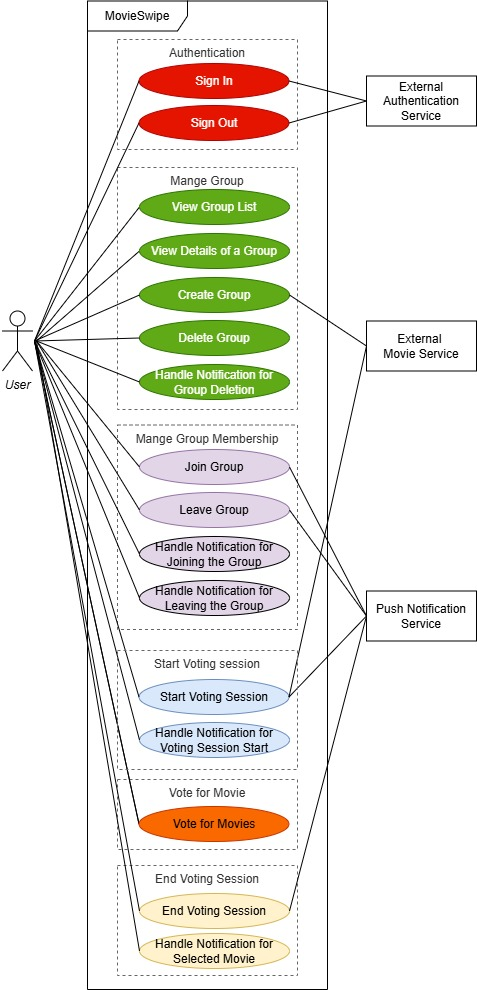

4. RQ2: MovieSwipe Description
Below are the three MovieSwipe app descriptions, at different levels of specificity, that we provided to GenAI. At each level, we provided the description of this and all previous levels.
- High-level App Description
- App Features
- Formal Use Case Specifications
In our experiments, we save the descriptions as markdown files and reference them in prompts during generation. These descriptions are available in this zip file.
1. High-level App Description
The name of the app is MovieSwipe. In the app, a user can create a group and invite other users to join the group via an invitation code. The group owner can also delete the group. Upon joining a group, users are asked to specify what genres of movies they like (comedy, horror, action, etc.). The group owner can then start a voting session and MovieSwipe’s smart recommendation system shows movie recommendations that group members can swipe right for “interested” or left for “not interested”. The app then looks at everyone’s choices and finds the best match that most people will be happy with. When voting ends, the app shows the winning movie with its details to everyone in the group.
2. App Features
1. Manage Authentication: To access app features, a user must authenticate using Google Authentication Service first. New users are automatically registered with the app upon the first authentication. An authenticated user can sign out.
2. Manage Group: A user can create a group and become its owner. When creating a group, the group owner provides the group name and specifies their movie genre preferences. The list of genres is retrieved from the TMDB API. After creating the group, the group owner can view group details such as the group name, a unique invitation code for member recruitment, and their role in the group (“owner”). The group owner can also delete groups they own. When a group is deleted, all group members receive a push notification that is sent via Firebase Cloud Messaging. Any user can view a list of active groups they own or have joined. A user can further view detailed information of groups where they are the owner or a member.
3. Manage Group Membership: A user can join a group using the invitation code shared by the group owner and become a group member. When joining, the user must specify their movie genre preferences, selecting from the list of genres specified for the group by its owner. The user can leave the group at any time, if they wish. When a user joins or leaves the group, the group owner receives a notification sent via Firebase Cloud Messaging. The group owner can click on the notification to view the list of current members in the group.
4. Start Voting Session: The group owner can start a voting session, triggering the system to generate a list of 10 recommended movies, based on all members’ genre preferences. Once the list is ready, the system sends, via Firebase Cloud Messaging, real-time notifications to all members announcing the start of the voting session. Group members can tap the notification to be redirected to the app to join the voting session.
5. Vote for Movie: In the voting session, each group member indicates their movie preferences by swiping right for “interested” or swiping left for “not interested” on each movie card. Movie cards display movie metadata. Users can exit the voting session and have their voting results recorded, then resume the voting session if they exited before swiping on all movies.
6. Select Movie: The group owner can end the voting session, triggering the system to analyze votes and determine the winning movie. The system then sends notifications to all group members via Firebase Cloud Messaging. When group members tap on the notification, the system displays the winning movie, along with the details of the movie.
3. Formal Use Case Specifications
We broke the main app features into 16 detailed use cases, such as Create Group, Delete Group, Join Group, Vote for Movies, etc.
We devised a formal use case specification for each such use case, describing how a user (an "actor") interacts with a system to achieve the specific goal and outlining the main triggers, success path, and alternative failure paths.
Here are all formal use case specifications for MovieSwipe. Please note that these files might be slow to load in the browser. We recommend downloading this zip file which contains all formal use case specifications as markdown files, to view the files locally.
- UC1: Sign In
- UC2: Sign Out
- UC3: Create Group
- UC4: View Groups List
- UC5: View Details of a Group
- UC6: Delete Group
- UC7: Handle Notification for Group Deletion
- UC8: Join Group
- UC9: Leave Group
- UC10: Handle Notification for User Joining the Group
- UC11: Handle Notification for User Leaving the Group
- UC12: Start Voting Session
- UC13: Handle Notification for Voting Session Start
- UC14: Vote for Movies
- UC15: End the Voting Session
- UC16: Handle Notification for Selected Movie
Use Case Diagram
The use case diagram was not provided to GenAI but rather used as a help for tracking our progress. We include it nevertheless for completeness. Use cases associated with a feature are highlighted in the same color.
